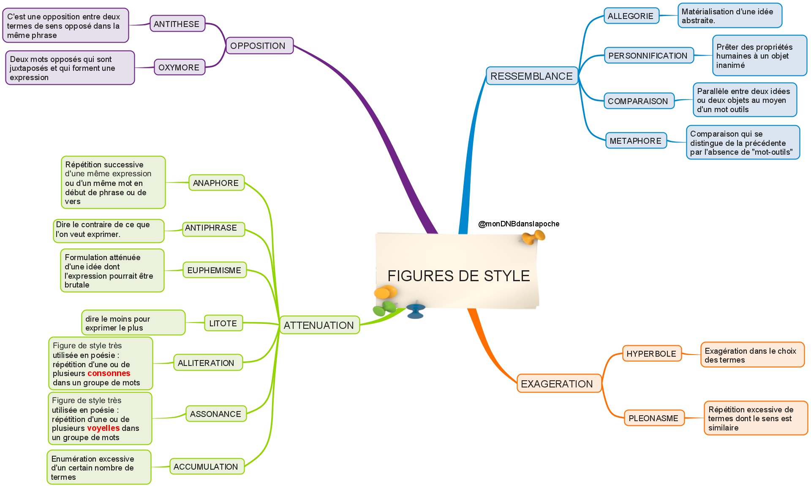

Les figures de style (niveau collège)
Qu'est-ce qu'une figure de style ?
Une figure de style est un procédé d'expression qui vise à créer un effet (rendre le texte plus vivant, plus imagé, plus expressif). Les poètes et les écrivains les utilisent pour jouer avec les mots.
1. Les figures d'analogie
Elles rapprochent deux éléments pour créer une image.
Comparaison
Compare deux éléments avec un outil de comparaison (comme, tel, semblable à, etc.)
Il est fort comme un lion.
Elle est douce comme une brise d'été.
Métaphore
Compare deux éléments sans outil de comparaison. C'est une comparaison implicite.
Ce lion rugissait dans la foule. (pour un homme courageux)
Le printemps de la vie. (pour la jeunesse)
Personnification
Donne des caractéristiques humaines à un objet, un animal ou une idée.
La lune sourit dans le ciel.
Le vent chuchotait dans les arbres.
Allégorie
Représentation concrète d'une idée abstraite (la mort, la liberté, etc.)
La faucheuse (pour la mort)
Une femme aux yeux bandés avec une balance (pour la justice)
2. Les figures d'opposition
Antithèse
Opposition de deux idées dans une même phrase.
Le jour et la nuit.
L'amour et la haine.
Oxymore
Deux mots de sens opposés sont juxtaposés (côte à côte).
Un silence assourdissant.
Cette obscure clarté.
Antiphrase
Dire le contraire de ce que l'on pense (ironie).
Quel beau travail ! (alors que c'est un échec)
Il est vraiment très malin... (pour dire qu'il est bête)
3. Les figures d'amplification / atténuation
Hyperbole
Exagération pour marquer l'intensité.
Je t'ai attendu une éternité.
Il a un million de bonbons.
Gradation
Énumération de termes de plus en plus forts (ou faibles).
Il a couru, sprinté, volé vers la ligne d'arrivée.
Je me meurs, je suis mort.
Euphémisme
Atténuer une réalité difficile ou choquante.
Il nous a quittés. (pour "il est mort")
Les non-voyants. (pour "les aveugles")
Litote
Dire le moins pour exprimer le plus. C'est une figure d'atténuation.
Ce n'est pas mauvais. (pour dire "c'est excellent")
Va, je ne te hais point. (Corneille, pour dire "je t'aime")
4. Les figures de répétition
Anaphore
Répétition du même mot ou groupe de mots en début de phrases ou de vers.
Je suis venu, je suis resté, je suis parti.
Parallélisme
Répéter la même structure de phrase pour mettre en valeur des idées similaires.
J'ai vu l'aube briller, j'ai vu l'aube s'éteindre.
Allitération
Répétition d'une consonne dans un groupe de mots.
Pour qui sont ces serpents qui sifflent sur vos têtes ? (Racine)
Assonance
Répétition d'une voyelle dans un groupe de mots.
Les ailes des papillons.
5. Les figures de substitution
Métonymie
Remplacer un mot par un autre qui lui est lié logiquement (contenant pour contenu, partie pour tout, etc.).
Il a bu un verre de vin. (le verre pour le contenu)
Lire du Baudelaire. (l'auteur pour l'œuvre)
Périphrase
Remplacer un mot par une expression plus longue qui le décrit.
La ville lumière (pour Paris)
Le roi des animaux (pour le lion)
Pour aller plus loin (lycée)
D'autres figures à connaître
Ces figures sont souvent étudiées au lycée. Elles complètent les précédentes pour une analyse plus fine.
À retenir
Ces figures ne sont pas exigées au brevet, mais les connaître peut te faire gagner des points en analyse de texte !
Pièges à éviter
Comparaison ≠ Métaphore
Comparaison : utilise un outil de comparaison (comme, tel, etc.).
Ex: Il est fort comme un lion.
Métaphore : pas d'outil de comparaison.
Ex: C'est un lion !
Antithèse ≠ Oxymore
Antithèse : deux idées opposées dans la même phrase.
Ex: Le jour et la nuit.
Oxymore : deux mots opposés côte à côte.
Ex: Un silence assourdissant.
Euphémisme ≠ Litote
Euphémisme : atténuer une réalité difficile.
Ex: Il nous a quittés.
Litote : dire le moins pour exprimer le plus.
Ex: Ce n'est pas mauvais (pour "c'est excellent").
Allitération ≠ Assonance
Allitération : répétition de consonnes.
Ex: Des serpents qui sifflent.
Assonance : répétition de voyelles.
Ex: Les ailes des papillons.
Hyperbole ne veut pas dire "gros mot"
L'hyperbole est une exagération, pas un mot vulgaire !
Ex: Je t'ai attendu une éternité.
Cartes mentales
Figures d'analogie

Toutes les figures
